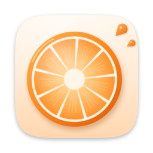
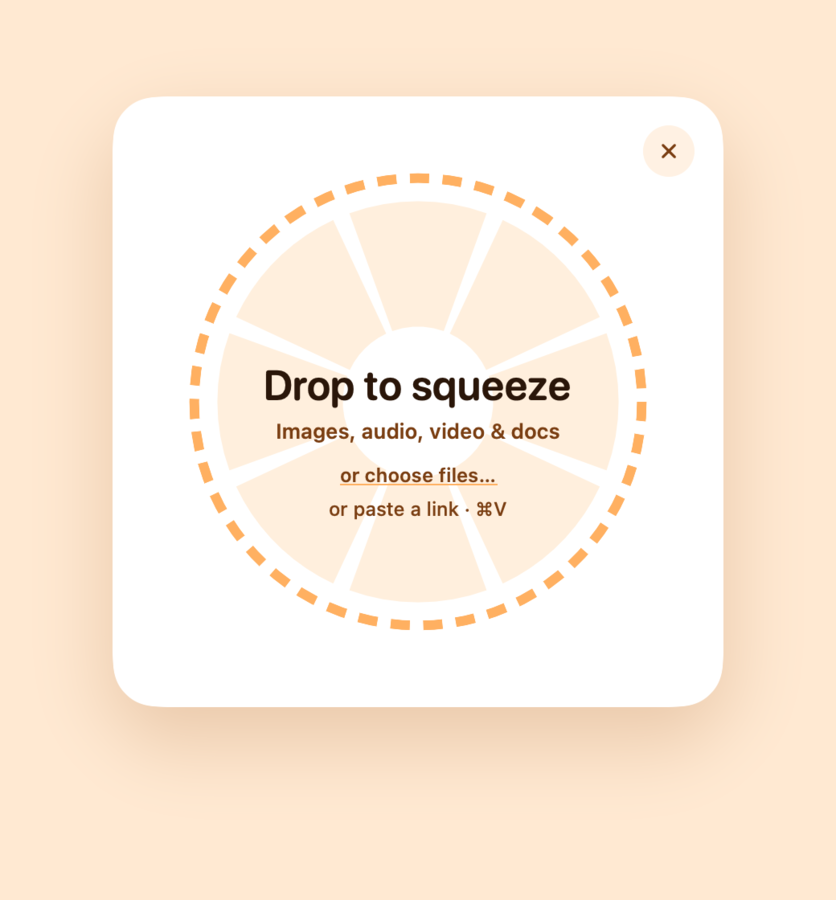
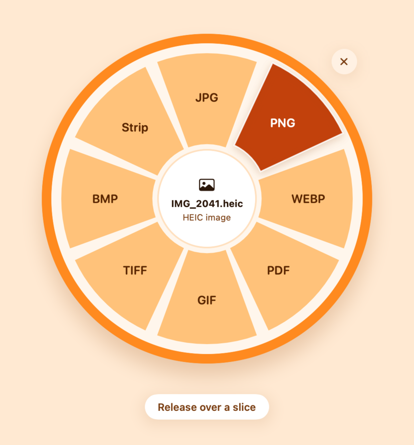
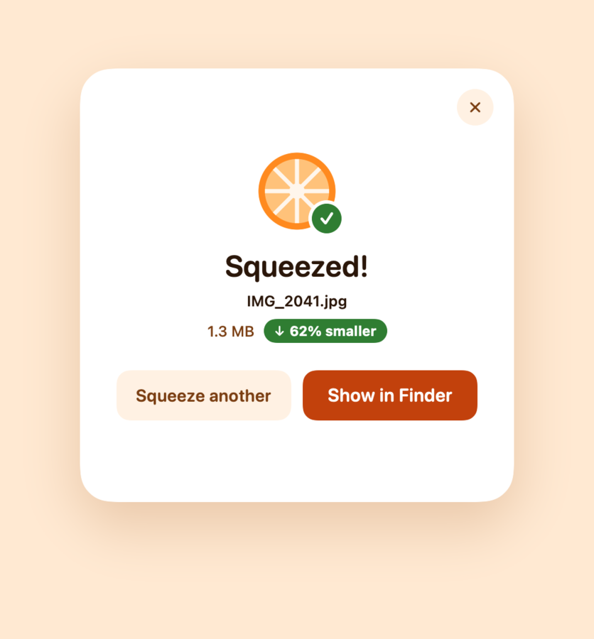
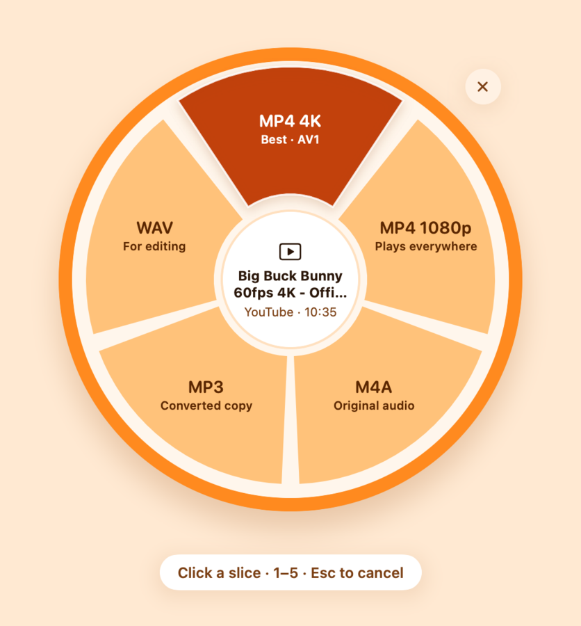
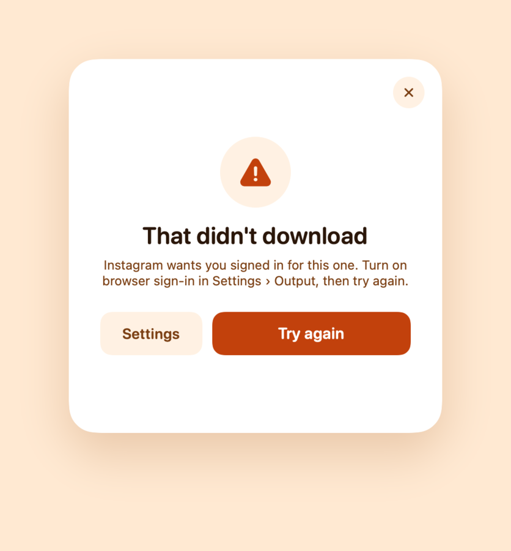
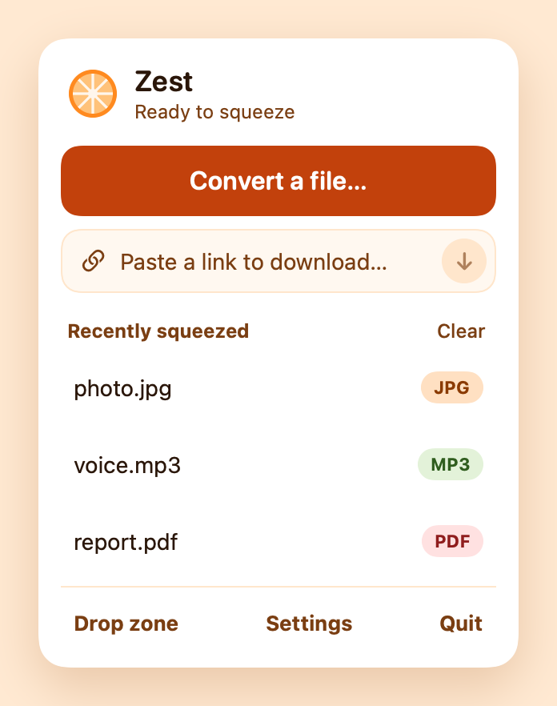
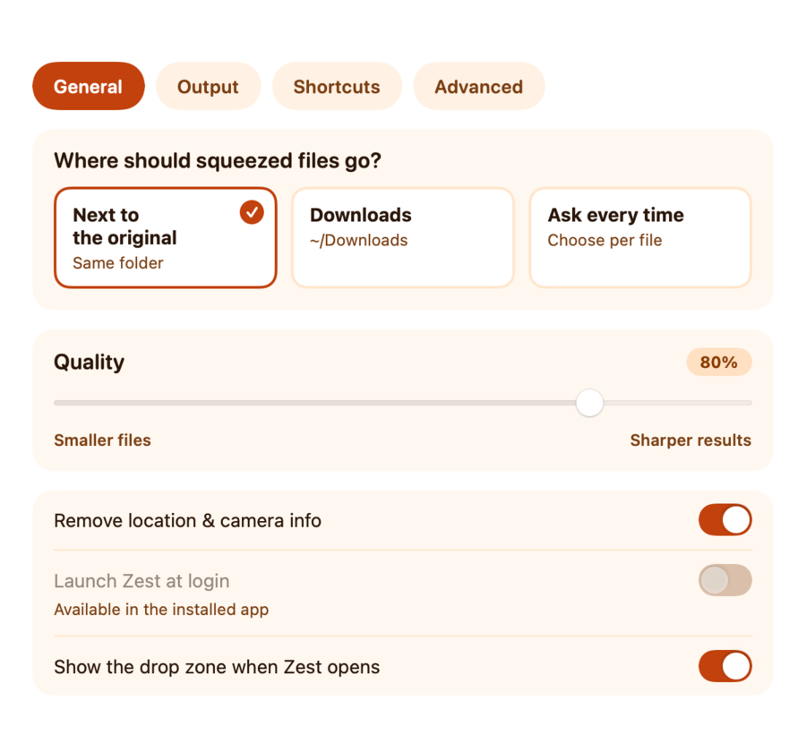
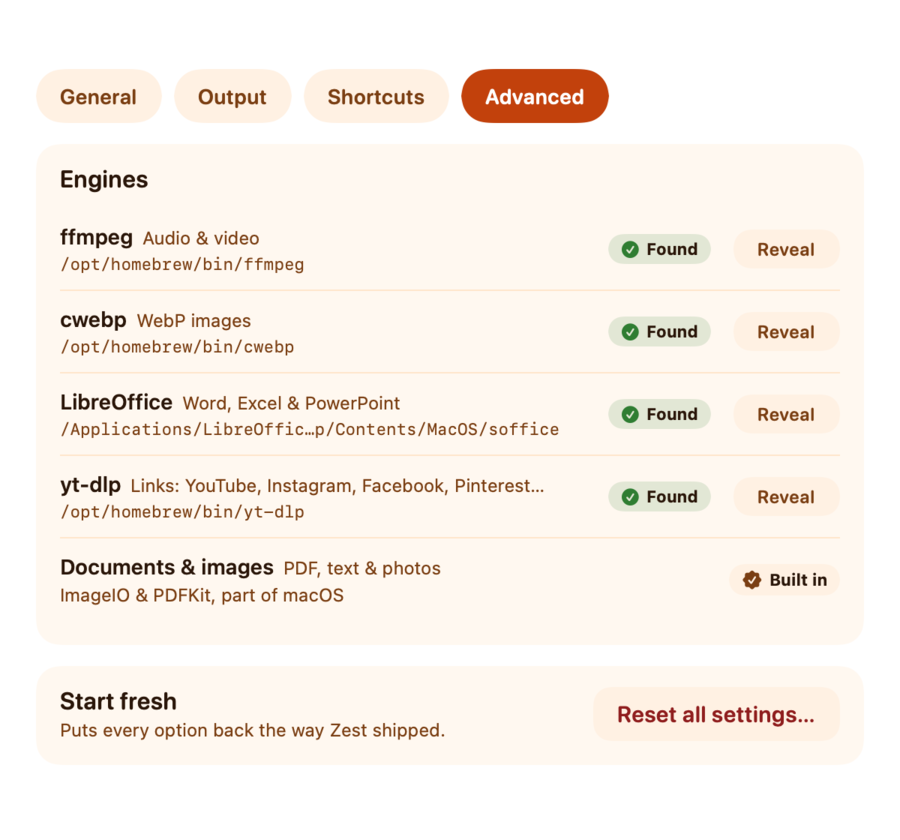

Zest is a tiny converter that lives in your menu bar (top-right of the screen, next to the clock). Drag any file onto it and an orange slice pops up — each slice is a format you can turn the file into. Pick one and the new file appears right next to the original. It can also save videos, audio and images from links. Everything happens on your Mac; nothing is uploaded.
Needs macOS 13 Ventura or newer. Works on both Apple silicon (M-series) and Intel Macs.
Comfortable with Terminal? Instead of steps 2–3 you can run xattr -dr com.apple.quarantine /Applications/Zest.app once.
Photos and documents work straight away. A few free tools add the rest:
| What you want | Works out of the box? | Free tool it uses |
|---|---|---|
| Photos: HEIC, JPG, PNG, TIFF, GIF, BMP, photo → PDF | Yes | built into macOS |
| Documents: Word, RTF, HTML, text ↔ PDF | Yes | built into macOS |
| Audio & video (MP3, M4A, WAV, MP4, MOV…) | Needs ffmpeg | ffmpeg |
| WebP images | Needs webp | webp |
| Downloading from links | Needs yt-dlp + ffmpeg | yt-dlp |
| Excel, PowerPoint, spreadsheets | Needs LibreOffice | LibreOffice |
brew install --cask libreofficeTip: run brew upgrade yt-dlp now and then — sites change and yt-dlp keeps up.
Strip (on photos) removes the location and camera details without changing a single pixel — handy before sharing.
It saves a copy named like photo-clean.jpg.
Lots of files at once? Drop them together; the slice offers formats they can all become. Files already in that format are left alone.
From Finder: right-click a file → Open With → Zest.
Zest never overwrites anything: if the name is taken you get photo (2).jpg.



| 1–9, 0 | pick a slice |
| Return | pick the highlighted slice |
| Esc | back out / close the drop zone |
| ⌘V | paste a link (or files) into the drop zone |
| ⌘O | choose files to convert |
| ⌘, | Settings (from the menu) |

| Slice | What you get |
|---|---|
| MP4 4K (Best) | Highest quality video with sound. Above 1080p, YouTube uses a newer format (AV1/VP9): plays in QuickTime on M3-or-newer Macs; otherwise use the free VLC or IINA player. |
| MP4 1080p (Plays everywhere) | H.264 video — plays on every phone, TV and app. Shown when it differs from Best. |
| M4A | Just the audio, exactly as the site has it — the best audio quality available. |
| MP3 | Audio as MP3 320 kbps, for older players and car stereos. |
| WAV | Uncompressed audio for editing apps. |
| Image | The full-size picture from a photo post (e.g. Pinterest). |
Honest note: these sites only keep compressed audio (about 128–160 kbps). MP3 320 and WAV can't add back quality the site never had — they're for compatibility and editing. M4A is the original.
Some posts (Instagram stories, some reels, members-only videos) need you to be signed in. Go to Settings → Output → Use sign-in from and pick the browser you're signed in with. Safari needs Zest to have Full Disk Access (System Settings → Privacy & Security); Chrome, Brave and Edge will ask for Keychain access once. Leave it Off if you don't need it.
Only save what you have the right to — your own posts, Creative-Commons videos, or with permission. Each site's terms apply.

Click the orange slice in the menu bar for the Zest menu: convert a file, paste a link, your recently made files (click one to show it in Finder), the drop zone, Settings and Quit. Right-click it for a plain menu, including Download Link from Clipboard.
General: where files go — next to the original (default), your Downloads folder, or ask every time; quality (smaller files ↔ sharper results); removing location & camera info (on by default); launch at login.
Output: shrink big photos and videos to a longest side (4096 / 2048 / 1080 px), show in Finder or play a sound when done, and browser sign-in for links.
Advanced: shows which helper tools Zest found (see section 2).



| “Zest can't be opened” / “not verified” | Do step 1.3 above (Privacy & Security → Open Anyway). If it says “damaged”, run the Terminal line from section 1. |
| I don't see Zest anywhere | It has no Dock icon — look for the orange slice in the menu bar. Opening the app again shows the drop zone. |
| Videos or audio offer no formats | Install ffmpeg (section 2), then check Settings → Advanced. |
| “Downloading links needs yt-dlp” | brew install yt-dlp ffmpeg |
| A site “wants you signed in” | Settings → Output → Use sign-in from (section 4). |
| A download stopped working | Sites change often: brew upgrade yt-dlp, then try again. |
| Where did my file go? | Next to the original by default; links go to Downloads. The menu's “Recently squeezed” list shows them — click to reveal. |
| Uninstall | Quit from the menu, then drag Zest from Applications to the Trash. |